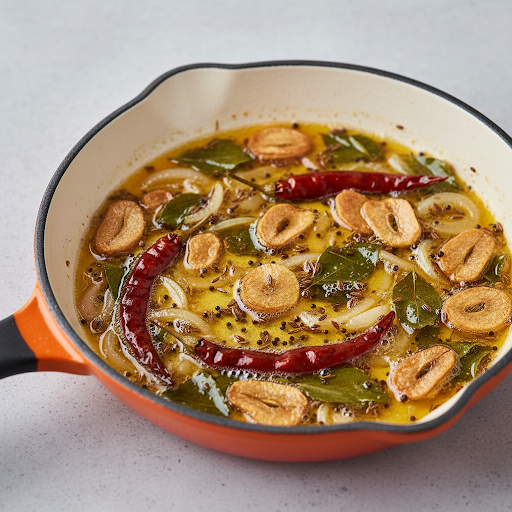
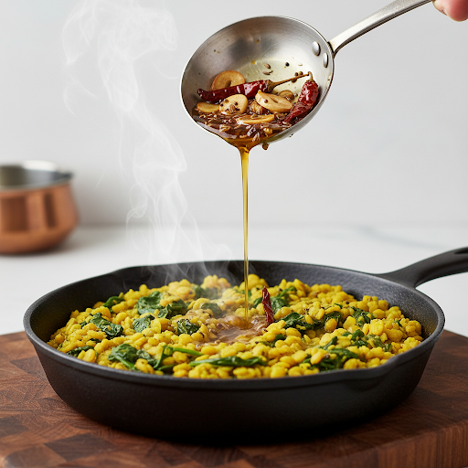
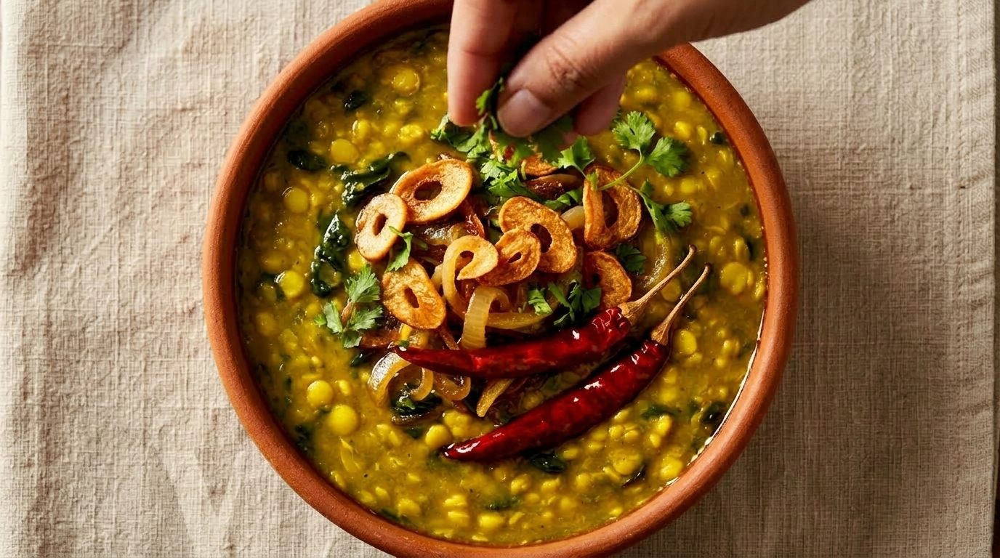

Cook the Dal
20 mins
00:00
Click a step to start
Rinse the dal
1 min
Rinse ½ cup toor dal until the water runs clear.
Rinse ½ cup toor dal until the water runs clear.
Add Ingredients
2 min
Transfer dal to cooker and add tomatoes, spinach, tamarind, turmeric, salt, and water.
Transfer dal to cooker and add tomatoes, spinach, tamarind, turmeric, salt, and water.
Pressure Cook
12–15 min
Cook for 4 whistles on high flame, then continue for 10 minutes.
Cook for 4 whistles on high flame, then continue for 10 minutes.
Release Pressure
5 min
Turn off the stove and allow pressure to release completely.
Turn off the stove and allow pressure to release completely.
Check & Adjust
2 min
Open cooker and check softness. If needed, cook again with more water.
Open cooker and check softness. If needed, cook again with more water.
💡 Add hot water to adjust consistency if the dal becomes too thick.
Prepare the Tadka
6–8 mins

00:00
Click a step to start
Heat the oil
30 sec
Pour oil into a pan and heat it on medium flame.
Pour oil into a pan and heat it on medium flame.
Add garlic
40 sec
Add chopped garlic and sauté until aromatic.
Add chopped garlic and sauté until aromatic.
Add onions
2–3 min
Cook until soft and slightly golden.
Cook until soft and slightly golden.
Add cumin & mustard
30 sec
Let them crackle.
Let them crackle.
Add curry leaves & chilies
1–2 min
Sauté until fragrant.
Sauté until fragrant.
⚠️ Do not burn garlic.
Combine & Simmer

00:00
Click a step to start
Add tadka to dal
1 min
Pour the prepared tadka into the cooked dal and mix well.
Pour the prepared tadka into the cooked dal and mix well.
Simmer
5 min
Let the dal simmer on low flame to blend flavors.
Let the dal simmer on low flame to blend flavors.
⭐ Add ghee for rich taste.
Garnish & Serve

Add coriander
Garnish with fresh coriander leaves.
Garnish with fresh coriander leaves.
Serve hot
Serve with rice or roti.
Serve with rice or roti.